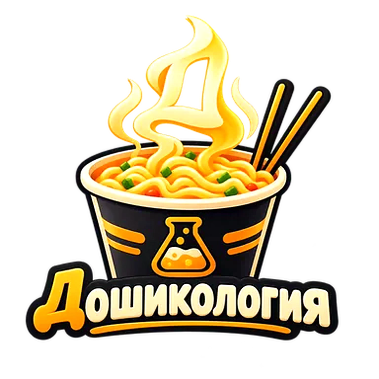

Эксперимент дня
Загружаем лабораторный протокол…
Институт подключается к архиву рецептов.

Институт подключается к архиву рецептов.
От «до зарплаты» до экспериментов, которые лучше проводить рядом с огнетушителем.
Каждый рецепт прошёл минимум одну кухню и максимум несколько сомнительных жизненных решений.
Когда логика бессильна, остаётся задать вопрос лапше. Точность прогнозов примерно как у гороскопа, только вкуснее.
Донаты идут на развитие приложения, новые рецепты и моральную компенсацию испытуемым.